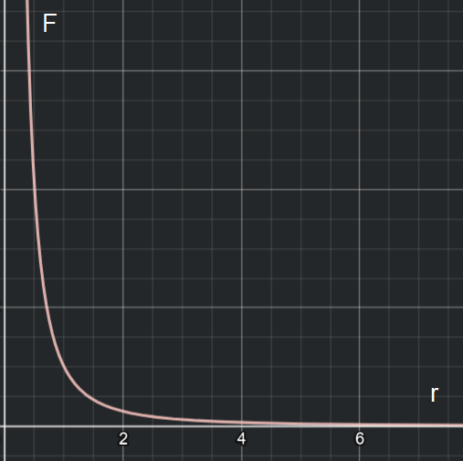

Energy comes in many forms, so we'll talk about and derive formulas for a few of them here. At the end I will also list up other forms of energy we might discuss in future courses (eg. electricity).
We won't go too deep into this form. It is basically energy released by chemical reactions. When you use a muscle, energy in your body (in the form of ATP) is used up, releasing chemical energy.
Kinetic energy is energy an object has when in motion. The derivation here is rather difficult, but we're going to go through it anyways. We start by saying that work is equal to kinetic energy from the Work-Energy Theorem. So we will calculate the work done on the object to know its kinetic energy.
1) Newton's second law of motion states that F=ma, where m is the mass of the object and a is the acceleration.
2) The third equation of motion says that v²-u²=2as. Calculate the value for as from here:$$as=\frac{v^{2}-u^{2}}{2}$$
Fill in the found value for F:$$W=Fs$$ $$W=mas$$Fill in the found value for as:$$W=m⋅\frac{v^{2}-u^{2}}{2}$$Simplify a bit...$$W=\frac{1}{2}mv^{2}-\frac{1}{2}mu^{2}$$In our isolated system with no external forces, the initial velocity is 0, so we get a final formula:$$W=\frac{1}{2}mv^{2}$$This is great, and with the Work-Energy Theorem we find our formula for kinetic energy at last.$$K=\frac{1}{2}mv^{2}$$
| Name | Unit | Symbol |
|---|---|---|
| Kinetic Energy (K/T/Ek) | Joules | J |
Potential energy is energy held by an object, waiting to be released. Multiple types of potential energy exist. When you stretch out a bow, you do work on the bow's string, turning some of your chemical energy into potential elastic energy. As soon as you release the string, that potential energy is converted into kinetic energy for the arrow.
This is the type of potential energy you find in springs and elastic bands. The formula we will derive here comes from experimental findings. This form of energy is proportional to 2 different things: the amount you stretched the object and the spring constant of the object. The spring constant of an object defines how hard it is to stretch the object, the higher this value, the more energy is required.
Before we derive the formula for elastic potential energy, we'll derive Hooke's Law. This law lets us calculate the force required to stretch a spring. This force is proportional to both distance stretched and the spring constant, so we have a new formula:$$F_{s}=k⋅x$$
This is a graph showing the relation between force and stretch distance x. To stretch a spring, we do work on the spring by applying a force. This means that the area under the graph here is equal to the work done, which in turn is equal to our elastic potential energy (Work-Energy theorem). The area we have to calculate is a triangle, so:$$U=\frac{F⋅x}{2}$$Replace F with the formula from Hooke's Law:$$U=\frac{1}{2}kx^{2}$$This formula - the area under the graph - can also be proven using an integral.
| Name | Unit | Symbol |
|---|---|---|
| Potential Energy (U) | Joules | J |
Gravitational potential energy is equal to the work required to bring two objects with a distance of infinity between them to a distance of r between them. This is a definition, I did not decide it.
This graph shows the relation between the gravitational force (F=G*(m1*m2)/r²) and the distance r between the two objects. To calculate the work, we need the area under the graph, also known as the integral.$$W=\int_{\infty }^{r}\frac{GMm}{r^{2}}dr$$ $$W=-\frac{GMm}{r}$$ Thanks to the Work-Energy Theorem this becomes:$$U=-\frac{GMm}{r}$$I had a load of struggles comprehending why this formula is negative. It makes sense, however, in the simple sense that a smaller r will mean that the value after the negative sign is larger, thus making the total gravitational potential energy smaller. This is logical since, a smaller distance means less gravitational potential energy, some of it has been converted to kinetic energy to bring them closer.
Calculating a formula for gravitational potential energy here on Earth is quite easy. We know that through the Work-Energy Theorem, work is equal to energy, in our case gravitational potential energy. Since W=Fs, and F=mg, we get that W=mgh, where the displacement is the height above sea level (Earth's surface).$$U=mgh$$
Gravitational energy is the exact same thing as its potential counterpart, except that it is not potential. The formula and symbol remain the same.
By definition, mechanical energy is the sum of the kinetic energy and potential energy of an object.$$E_{mechanical}=U+K$$Because of the conservation of (mechanical) energy, the amount of energy will always be conserved. This means that, if you turn on your blender, the electrical energy going into it will be conserved, since that energy will be converted to kinetic energy for your blade and also some heat, the sum of which will be equal to the original electrical energy.
We've skipped over a lot of forms of energy here. This is because most of them build on other knowledge, such as magnetism or electrodynamics. The following forms of energy will be discussed in further courses:
Electric Energy
Magnetic Energy
Nuclear Energy
Sound Energy
Thermal Energy
Congratulations, you now have a great understanding of potential energy, kinetic energy, elastic energy, chemical energy, mechanical energy, and gravitational energy!
Wikipedia: Elastic Potential Energy
Wikipedia: Gravitational Potential Energy
YouTube: Derivation of Formula for Gravitational Potential Energy